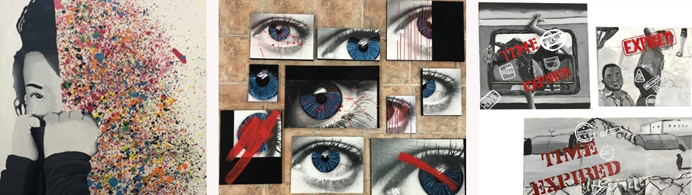

Pintura
No Autorretrato optei por fazer algo que me caracteriza-se e optei por dividir a minha cara ao meio. Do lado esquerdo temos o meu lado mais introvertido e do lado direito temos o lado mais divertido, usadno a técnica de dripping.
O trabalho Micro/Macro nós definios dois conceitos, sendo o olhos que representaria o macro e o universo micro. Que é como se estivessemos a ver o universo, tal como o telescópio vê as estrelas e os planetas.
Na Aprropriação trabalhei o tema do ódio e do poder. E ao integrar estes dois conceitos na forma de alguém possuir poder e condicionar os restantes a pensar ou agir. E inspirei-me na obra Liberdade Guiando o Povo de Eugène Delacroix que fala sobre as mudanças sociais, políticas e culturais. Com estes conceitos apropriei-me e fiz um trabalho que retrara a o desrespeito que se dá aos refugiados quando tentam escapar do seus paises em guerra para serem livres.